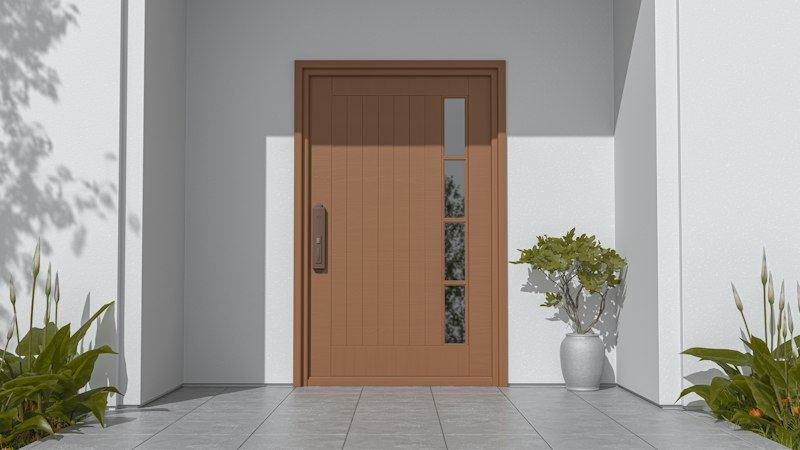
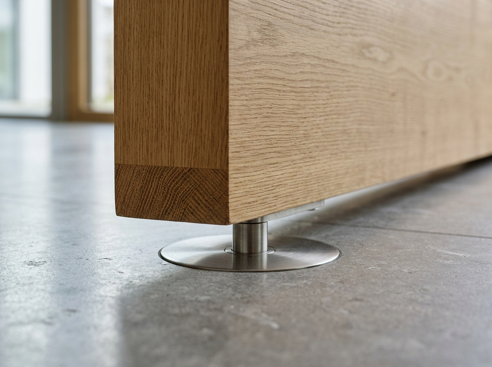
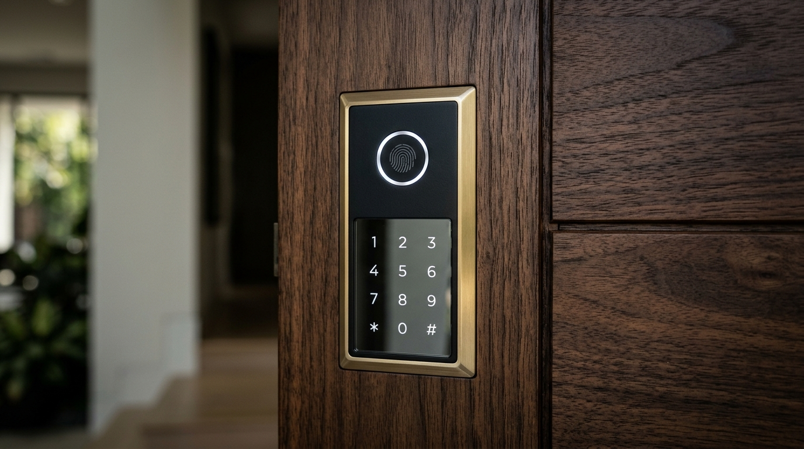
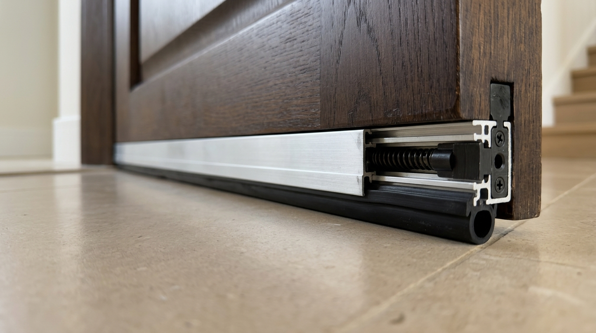
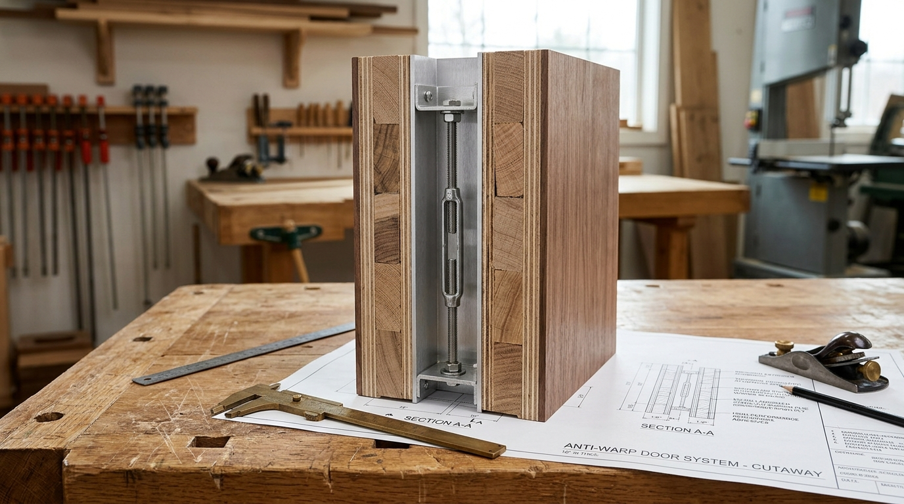
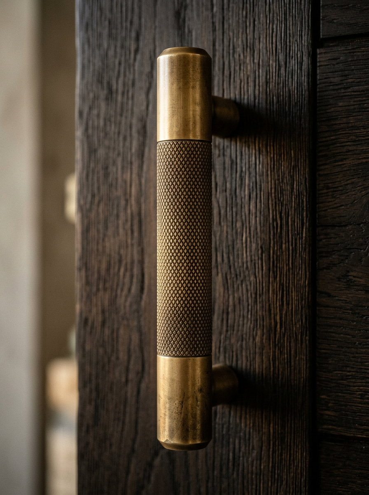
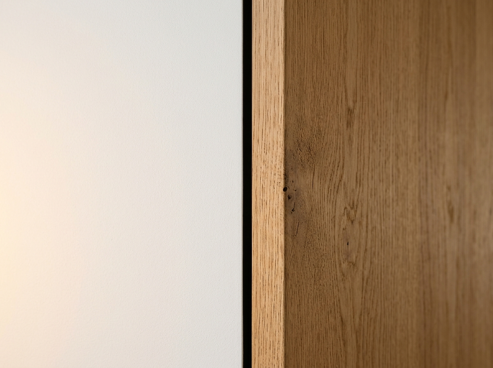

Uncompromising Joinery Built For Decades
A monumental entrance door is an architecture's handshake. When building doors exceeding 3 meters in height, standard butt hinges inevitably lead to frame twisting and sagging. TimberCraft engineers massive pivot doors utilizing concealed FritsJurgens hydraulic systems embedded directly within the door slab, transferring 100% of the door's 200+ kg mass into the concrete floor foundation. Inside the home, our flush acoustic timber doors sit perfectly planar with drywall, utilizing invisible magnetic strike plates and drop-down acoustic perimeter gaskets.
The TimberCraft Material Guarantee
Every timber slab is dried to 7-9% equilibrium moisture content in our computer-monitored kiln chambers before machining. We utilize non-toxic low-VOC adhesives and architectural-grade catalyzed finishes that withstand UV exposure, moisture, and daily household wear without yellowing or flaking.


Laser-verified planar alignment across all joints and reveals.
Hardware & Engineering Features
Every mechanism is selected from premium German and Austrian engineering leaders, calibrated for lifetime durability.

Concealed Hydraulic Pivot
FritsJurgens System M+ with adjustable closing speed, latching damping, and 90° hold.

Biometric Mortise Locks
Concealed high-security smart mortise locks with fingerprint and keypad access.

42 dB Acoustic Drop Seals
Automatic neoprene bottom sweeps that plunge to the floor upon latch engagement.

Anti-Warp Tension Core
Staved kiln-dried timber core wrapped around a structural aerospace aluminum spine.

Solid Brass Pull Bars
Full-height hand-knurled brass or bronze pull handles with invisible mounting.

Drywall-Flush Planar Jambs
Concealed aluminum jamb frames allowing drywall to finish seamless to the door casing.
Case Studies & Technical Articles
Case Study
 Case Study
Case Study
Concealed Hydraulic Pivots for 300 lb Hardwood Doors
Read in-depth structural joinery calculations, moisture stabilization insights, and hardware specifications from our master timberwrights.